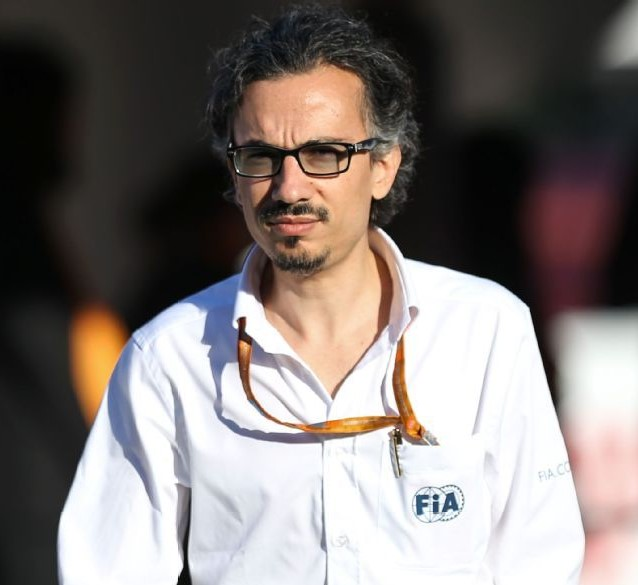
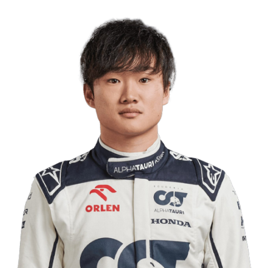
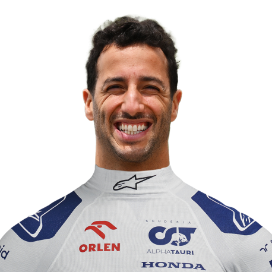

Team
Meet the team.
Team Principal

Laurent Mekies
Drivers

Yuki Tsunoda

Daniel Ricciardo
Meet the team.
Laurent Mekies
Yuki Tsunoda
Daniel Ricciardo
Vitantonio Liuzzi and Scott Speed were Toro Rosso's first drivers in 2006, with Neel Jani the test/third driver. The 2006 chassis, the STR1, was a modified version of Red Bull's car from the previous season.
The team finally switched to 2006-spec Ferrari V8 engines the following year, taking over the contract that Red Bull broke with the Scuderia in favour of Renault power. Liuzzi and Speed were brought back for a second season, with Sebastien Bourdais became the test driver. Much like in 2006, Toro Rosso had a difficult time for much of the year due to driver errors and reliability woes.
Having failed to score a point up to that point in the season, Speed was dropped after the European Grand Prix. The American was replaced by BMW Sauber development driver Sebastian Vettel, and results improved before the end of the season, with the German finishing fourth and Liuzzi six at the Chinese Grand Prix. This marked Toro Rosso's best result up to that point.
Vettel and Bourdais drove for the team in 2008, with the latter scoring his first points with a seventh-place in Australia. Vettel finished fifth in Monaco as the team improved over the course of the year, and both cars ran in the top six for much of the Belgian Grand Prix. Despite running as high as third and fourth on the final lap, Vettel and Bourdais eventually finished fifth and seventh respectively.
Nothing compared to the shock that Toro Rosso pulled off at the wet Italian Grand Prix. Vettel claimed pole position before taking his and the team's debut victory ahead of Heikki Kovalainen and Robert Kubica. It was the first win for an Italian-based team other than Ferrari since the 1957 German Grand Prix. It was also the first and only win so far for a Ferrari engine in a customer chassis.
Vettel ended the year scoring 35 of the team's 39 points, helping Toro Rosso to outscore the senior Red Bull team for the first and only time in their history. The German's efforts also helped him earn a call up to Red Bull for the 2009 season.
Team principal Franz Tost stated before the year began that it would be tough for the team to replicate their 2008 form, and that proved to be the case. Bourdais was let go in July due to disappointing results, and Jaime Alguersuari was brought in as his replacement. Toro Rosso ended the year 10th in the Constructors' Championship with just eight points, having been overtaken by Force India thanks to their podium finish in Belgium.
Prior to the 2013 Italian Grand Prix, Red Bull announced that Ricciardo would replace Mark Webber at the main outfit in 2014. Daniil Kvyat was brought in as his replacement, while Toro Rosso also made the switch to Renault power after signing a long-term deal with the French manufacturer.In the end, though, Carlos Sainz was chosen to partner Verstappen, while Toro Rosso ended the season in seventh with 30 points. The young line-up proved to be a success, with Sainz scoring points on his debut while Verstappen retired with an engine failure. The Dutchman secured two fourth-place finishes in Hungary and the United States, and Toro Rosso finished the year with 67 points, their most successful F1 season in terms of points. Verstappen scored 49 of those points compared to Sainz's 18.
Toro Rosso were rebranded as Scuderia AlphaTauri ahead of the 2020 F1 season, in order to promote Red Bull's fashion label of the same name.Kvyat and Gasly made up the team's driver line-up, and Gasly scored points at the season-opening Austrian Grand Prix. The newly-named outfit secured their first podium and win at the Italian Grand Prix, with Gasly claiming a debut career victory ahead of Sainz and Lance Stroll, becoming the first French driver to win since Olivier Panis at the 1996 Monaco Grand Prix.
-
-